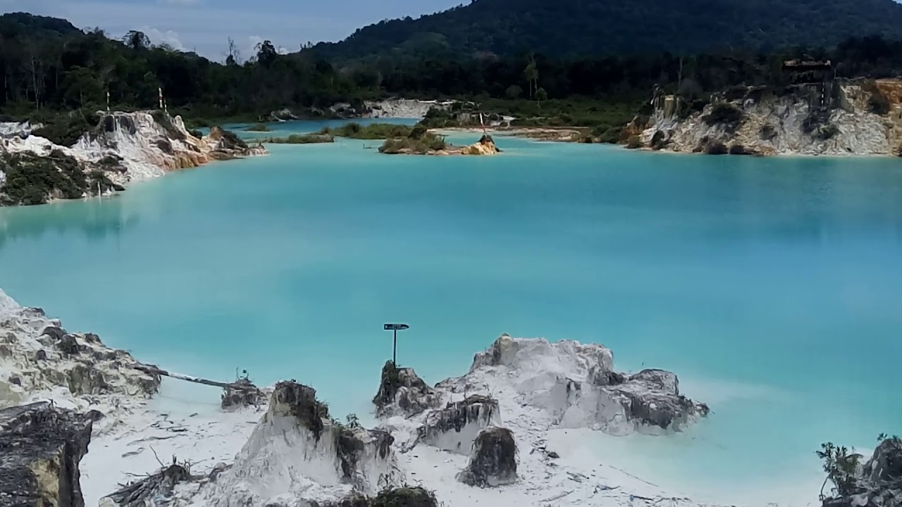

IFT104
Faiza Imania Putri
Hello everyone! My name is Faiza Imania Putri, my friends
usually call me Faiza. I am from Indonesia specifically in
Pontianak, West Kalimantan. For 18 years I live, I have
never moved to another place. That’s why sometimes I feel
bored with the environment and the atmosphere here. But in
my 19 I required to go out of my hometown to continue
my education, then I realize how meaningful this place was
for me. It feels so hard to leave my hometown, the memories
the people, the place that I usually visited. Too many
memories that this place gives to me. So with this post
I want to introduce several destination in my hometown
and a bit about myself.
My Favorite Things
Martial Art
I joined martial art
(Shorinji Kempo) when
I was 8 years old.
Shorinji Kempo is an
old martial art from
Japan.
Traveling
I love to go traveling
with my friends. Or
if we do not have enough
time to go traveling,
we just hangout
somewhere.
Hunting Streetfood
I love to hunting
streetfood with my
friends. But often
times I do it by
myself just to enjoy
my time.
My Hometown
Blue Lake

It called Blue Lake because
the water color is blue.
This lake actually used
to be a querry. But it has
not used for a long time.
Then it change into This
beautiful place.
Cuci Kain Waterfall
The name of this waterfall was
created base on the folklore in
Sekadau Province. The beauty is
so mesmerizing and natural.
There are many variety of flora
grow around the waterfall.
Tanjung Batu Beach
There are a hill and many stones
spread in this beach sand and
can be seen when the low tide,
that’s when the beauty increases.
This place often visited by the
tourist because it is near from
the roadway.